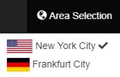
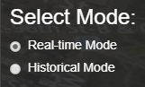

Tip: Please, click on a topic menu to show tutorial contents.
Area Selection
From the
Area Selection menu, you can select the available areas which in the current version are "New York city,
USA" or "Frankfurt city, Germany".

Pollen Simulation
Step.1 Select the
Pollen Simulation menu and then select your desired mode between Real-time mode or Historical mode. If you
select Historical mode, you are able to choose the month for display the pollen.

Step.2 Then, on the next section
Select tree type , please make selection of tree types you are interested in and confirm the selection with
Confirm button
Step.3 Then, the pollen statistical information window will pop up. It describes all the pollen dispersals
for each month. You can click somewhere on the map area to close this window. The statistic window can always
be called back with the "Show statistic" button
Step.4 Then, every time you click on the map, the view will be zoomed in and the analyzed pollen dispersal
area of your selection will be loaded.
Navigation
Step.1 Select the
Navigation menu and then select your desired mode: Walking Mode (Google API)/ Biking Mode (Google API)/ Walking Mode (PG-routing)/ Walking Mode (PG-routing avoid pollen)
Step.2 Then, please type-in your desired starting and ending point. Then, the navigation result will shown on the globe.
Step.3 You can click on the globe to zoom in and display the pollen dispersal along your route.
Step.3 You can close the navigated route by click on the Remove button or Clear Map button on the navigation bar.
Add Tree
You can help expanding the application database by adding more trees. To do this, click on the
Add tree menu. Then, a pop-up window will be opened and allows you to add a tree information. To get the
coordinates, you can just click at the specific point in the map or type it in manually.
Clear Map
A click on
Clear Map menu will clear pollen dispersals, navigation and your previous selection. You have to apply new
selection to display new pollen dispersal analysis again.
Show Statistic
The Statistic will automatically display after the tree selection, or when you click on the
Statistic menu. The Statistic chart shows you in which month your selected Trees are blooming.